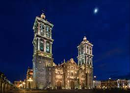

Un poco de mi historia
Mi nombre completo es
Ailin Ximena Miron Coeto y nací 26 de septiembre del 2006 en Tecamachalco,
Puebla. Mi familia en ese entonces la conformaba mi madre Rocio Coeto Armas,
mi padre Agustin Domingo Miron, una hermana Michel Miron Coeto y un hermano Irving Miron Coeto. La mayor parte
de mi infancia la viví en Palmar de Bravo, Puebla.

A los 1-2 años mis padres se separaron y estuve al cuidado de mi abuela, quien para mí es como mi segunda madre.
Mientras mi madre trabajaba, mis tíos, mi abuela y mis hermanos me cuidaban.
Siempre fui muy consentida y amada, aunque no teníamos mucho, nunca me faltó nada. La mayoría del tiempo estaba
en casa de mi abuela y era algo que me encantaba, en especial las reuniones de
domingo cuando toda la familia se reunía y mi abuelo viajaba desde su trabajo en México hasta el pueblo para
visitarnos. Él siempre me consentia mucho. Mi padre nunca estuvo muy presente para
mí, de vez en cuando nos visitaba o lo visitábamos en su casa. Él falleció cuando yo tenía 6 años. Años después
mi madre encontró una pareja y pasó a ser mi padre. Siempre me trató como su
verdadera hija y siempre lo consideré como mi único padre.
En el 4to de Primaria mi hermano tuvo algunos problemas y tuvimos que irnos a la ciudad de Puebla. Nos tuvimos
que acostumbrar a otra vida, entré a una nueva primaria y todos los días iba con
mi madre al pueblo. En ese tiempo mi hermana y mi hermano ya habían hecho sus vidas y ya pasaba más tiempo con
mi madre. Me aleje mucho de mi abuela, ya que casi no las veía. Cuando yo tenía
10 años, mi hermano falleció y tuvimos que irnos a Algodones, Baja California. En ese momento, mi hermana y la
esposa de mi hermano también fueron con nosotros. A partir de ahí, mi familia la
conformaba: el esposo de mi madre, mi madre, mi hermana y la esposa de mi hermano. Fue un viaje muy largo ya que
todo fue en carretera y en ese tiempo yo no tuve escuela y no la pasaba de hotel
en hotel. Llegando a Baja California buscamos casa y escuela. Era un lugar muy lindo, había muchas dunas y mucho
algodón, aunque era muy caluroso y seco. Muchas compras se hacían en dólares, lo
que más se comía era la carne, la cual estaba muy buena.
Estuvimos muy lejos de nuestra familia y ya no tuve contacto con mis abuelos, tíos y primos, eso fue por casi 1
año. A mi madre no le gustaba vivir ahí ya que estábamos muy lejos y el clima no era
tan agradable, entonces volvimos a mudarnos , ahora a Mazatlan.
Mazatlan tenía un clima igual de caluroso pero húmedo, la playa era muy linda, la gente era más amable, ahí
entre a otra primaria a mediados de 5to, volví a hacer amigos, había restaurantes con muy
buena comida y yo la mayoría del tiempo la pasaba en la playa, en ese tiempo la pasé muy bien ya que no me
preocupaban las cosas que pasaran a mi alrededor, pero igual estábamos muy lejos de nuestra
familia y a mi madre no le gustaba estar ahí, entonces nos volvimos a mudar.
En cuanto terminé la primaria,nos mudamos a Querétaro,donde empezó la secundaria en la escuela Marista, una muy
buena escuela católica, fue otro gran cambio, en el cual de cierta manera fue bueno ya
que pudimos ir al pueblo a visitar a toda la familia de allá. La primera vez que visitamos a toda la familia fue
un momento muy feliz, ya que había pasado como un año o medio año que no veía a toda
mi familia. Después de eso ya íbamos a visitarlos muy seguido.
Cuando llegó la pandemia, mis abuelos se enfermaron y fuimos a verlos para cuidarlos. Estuvimos varias semanas
ahí, mientras yo seguía teniendo clases en línea, el ver a mi abuelo enfermo fue demasiado
complicado. Mi abuelo fue el que más se enfermó y hubo un punto en el que estuvo bien y regresamos a Querétaro
pero volvió a tener muchos problemas respiratorios y ya no podíamos cuidarlo más, tuvimos
que llevarlo a un hospital donde no hubiera tantas personas. Lamentablemente , aunque ya había salido del covid,
sus pulmones ya estaban muy dañados y falleció. En el momento en que supe la noticia, fue
algo que no podía creer, ya que fue quien siempre me cuidó y me consintio. En el 2021, a finales me dio covid y
estuve muy mal. Me tuvieron que poner sueros y fueron días o semanas que no estaba muy
presente y en cierto punto creí que yo no iba a sobrevivir, pero afortunadamente lo hice.
Ahora estoy cursando el último semestre de preparatoria.